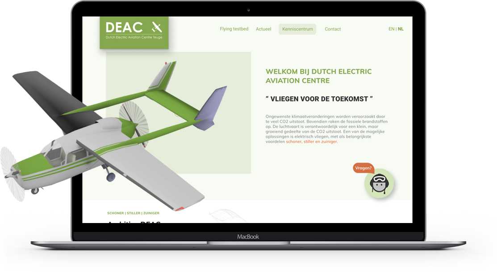

-
Still working on my new updated portfolio website...
Get intouch with me for more recent work, I would love to show you!
-

-
Inclusion & Diversity
Cliënt: Gemeente Amsterdam UX/UI Design
How can we ensure, through behavioural change, that employees in the FD department treat each other with respect and appreciation so that inclusiveness in the workplace improves?
Read More

-
Recreating Lime Website
Front-end development School Project
Developing programming skills by replicating an existing website (lime.com). Click here to see end result
Read More
- 
-
Redesign DEAC site
Cliënt: DEAC Teuge UX/UI Design
How to bring DEAC’s project - electric plane Cessna 337 Skymaster - to the attention of potential collaborations. In order to make conveying information about DEAC more understandable.
Read More